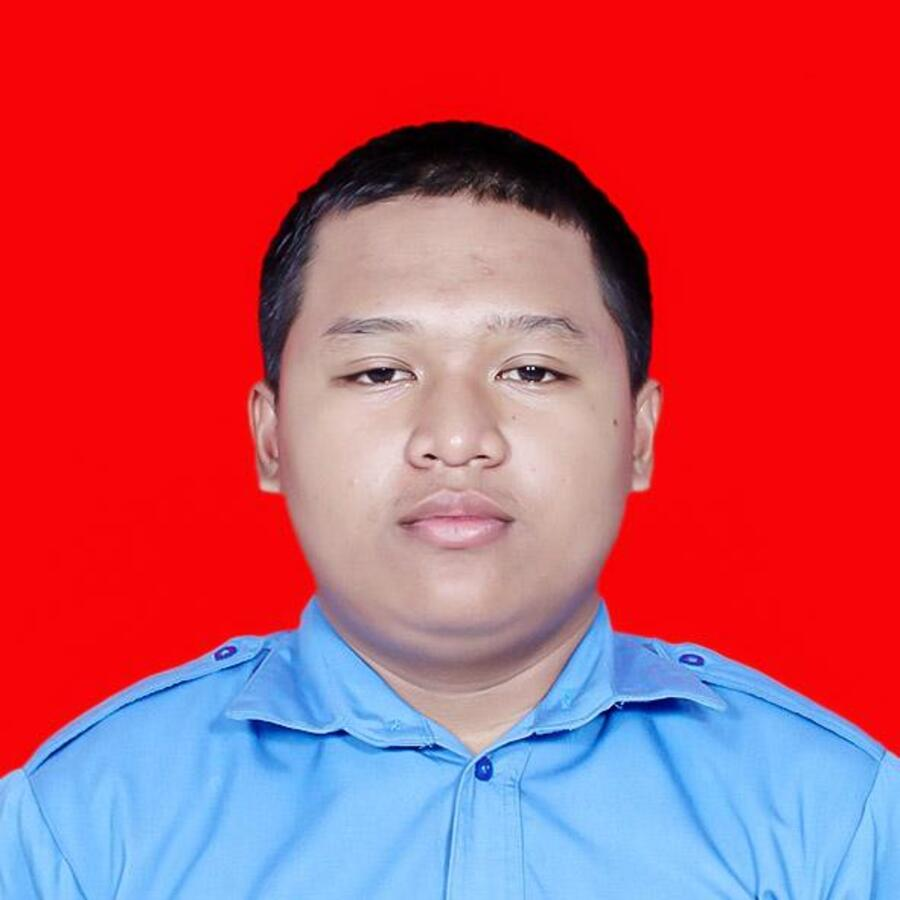

Yusuf Maulana Wakhidul Qohar
Junior Web Developer • PHP, MySQL & AI Integration Specialist
Ringkasan Profesional
Siswa SMK dan Junior Web Developer dengan sertifikasi kompetensi kejuruan berstandar SKKNI. Berpengalaman menjalani Praktik Kerja Lapangan (PKL) di RSUD Dr. Harjono Ponorogo dalam merancang aplikasi SICAKEP (Sistem Informasi Catat Kepegawaian). Menguasai pengembangan web Front-End responsif (HTML5, CSS3, JavaScript) dan Back-End sisi server (PHP Native & database relasional MySQL).
Riwayat Pendidikan
- Mendalami logika algoritma pemrograman, perancangan database relasional MySQL, dan pemrograman web berbasis PHP.
- Aktif sebagai Anggota OSIS SMKN 1 Jenangan Periode 2024 - 2025 dalam kepanitiaan acara dan kedisiplinan kesiswaan.
- Mengikuti uji kompetensi kejuruan dan kunjungan industri dengan predikat memuaskan.
- Lulus dengan fondasi kuat pada mata pelajaran TIK, logika matematika, serta pengoperasian komputer dan internet.
Sertifikasi & Lisensi Kompetensi
- Diberikan kepada YUSUF MAULANA WAKHIDUL QOHAR sebagai PESERTA Kunjungan Industri ke studio pengembang software & media digital di Salatiga.
- Terverifikasi secara resmi dengan nomor kredensial:
GL4092193380(Valid hingga 05 Januari 2027 via gamelab.id).
- Dinyatakan KOMPETEN dalam 5 unit kompetensi uji: implementasi UI web, algoritma pemrograman berbasis teks, basis data SQL relasional, struktur data, dan pengujian software (debugging).
- Penguasaan operasi CRUD, sanitasi input form, manajemen session, dan normalisasi database.
- Penerapan Prompt Engineering terarah untuk pembuatan dokumentasi dan troubleshooting kode program.
Pengalaman Kerja & Proyek Unggulan
- Membangun dan mengembangkan sistem informasi web SICAKEP (Sistem Informasi Catat Kepegawaian) untuk efisiensi pencatatan pegawai rumah sakit.
- Merancang antarmuka login yang terverifikasi aman dengan basis data relasional MySQL.
- Menguji sistem pada berbagai perangkat kerja staf dan berkoordinasi langsung dengan staf kepegawaian RSUD Dr. Harjono.
- Membangun portal masuk akun dan form pencatatan buku terintegrasi database MySQL via phpMyAdmin.
- Mengimplementasikan seluruh operasi CRUD (Create, Read, Update, Delete) dengan sanitasi parameter data.
- Menyusun skema relasional
tokobuku.sqluntuk pengujian basis data lokal XAMPP.
- Melakukan observasi dan wawancara langsung bersama pemilik gerai batik untuk mengidentifikasi kebutuhan promosi digital.
- Merancang skema database MySQL dan menulis kode antarmuka PHP dinamis untuk menampilkan katalog motif batik Reyog.
- Mengintegrasikan tombol order WhatsApp yang otomatis merangkai rincian motif pesanan pelanggan.
- Membangun platform portofolio interaktif modular tanpa ketergantungan framework berat.
- Mengembangkan simulator visualisasi query SQL berbasis peramban untuk sarana belajar basis data interaktif.
Pengalaman Organisasi & Kepemimpinan
- Aktif berkontribusi dalam perencanaan dan eksekusi program kerja kesiswaan, kepanitiaan agenda sekolah, dan penegakan tata tertib siswa.
- Melakukan koordinasi efektif lintas seksi bidang serta memfasilitasi komunikasi antara pembina sekolah dan rekan pelajar.
- Mengasah kecakapan kepemimpinan (leadership), pemecahan masalah, kedisiplinan, serta kerja sama tim dalam organisasi resmi sekolah.
Matriks Keahlian (Skills)
Pemrograman Web
HTML5 Semantik, CSS3 (Flexbox & Grid), JavaScript (ES6 DOM), PHP Native, Bootstrap UI, Responsive Web Design.
Basis Data
MySQL, Normalisasi Tabel, Desain ERD, phpMyAdmin, Kueri SQL (SELECT, JOIN, GROUP BY, WHERE).
Artificial Intelligence
AI Prompt Engineering (ChatGPT, Claude, Gemini), LLM Coding Assistants (Cursor, Copilot), Verifikasi Kode AI.
KKA & Tools
Spreadsheet / Excel (Formula & Analisis), Git & GitHub, VS Code, XAMPP / Laragon, Dokumentasi Teknis.
Dokumen ini disusun secara akurat berdasarkan rekam jejak akademik, asesmen kompetensi SKKNI, dan proyek nyata Yusuf Maulana Wakhidul Qohar.
💬 Hubungi Langsung via WhatsApp